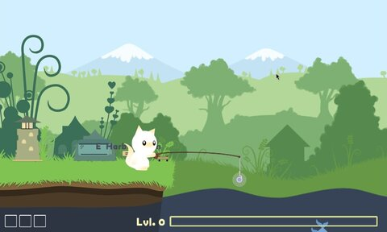
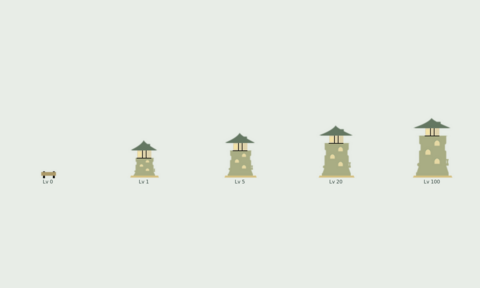
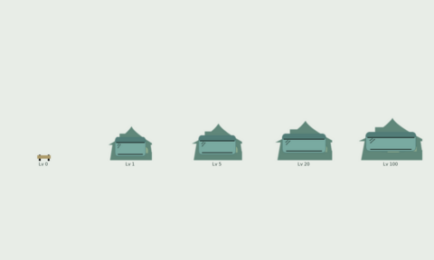
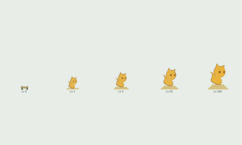

Package detail
Harbor Town
Version 0.1.0
What it does
Harbor Town turns the land west of the dock into an optional endgame money sink. Walk to the Harbor Town sign and open the menu to build and upgrade three landmarks: a Lighthouse that widens your lure light radius by up to 40% at night or in deep water, an Aquarium that displays up to six caught Fishalog species swimming behind glass, and a Golden Cat statue for pure dockside prestige. Every building has unlimited levels along an exponential-to-linear cost curve and grows across five visual stages.
Requirements
- JAMM-CGF with a configured August 2023 legacy VM base.
- Build into a separate game copy; do not use the current Steam YYC archive as the base.
Install
- Download this source ZIP.
- In JAMM, choose Add mods and import the ZIP.
- Enable it in a profile, check the profile, then build or install to a separate game copy.
In-game controls
- Walk near the Harbor Town sign on the dock (lure uncast, not swimming or in another shop) and press E (gamepad X) to toggle the Harbor Town menu.
- Use Up and Down (or gamepad D-pad) to select a building, Space (gamepad A) to build or upgrade, and Escape (gamepad B) to close.
- Click any building card's Build / Upgrade button or Close with the mouse.
- With JAMM Console enabled (F12): type
harborto print levels,harbor <lighthouse|aquarium|statue> <n>to set a level, orharbor money <n>to add test funds.
Screenshots








How it works
The dock Area declaration anchors the harbor controller to the vanilla Cliff landmark with a non-solid follow offset, leaving the cat's walking path, shops and boat launch unobstructed. Each landmark starts as a wooden stake at level 0 and advances through composed sprite stages at levels 1, 5, 20 and 100, with a subtle logarithmic scale tail past level 100.
The Lighthouse (base $25.0K) sweeps a rotating night beam above stage 0 and multiplies the lure Lightbulb scale at night or at depth y >= 2000 by min(0.40, 0.03 * ln(1 + level)), capping at +40%. The Aquarium (base $40.0K) reads caught rows from CatalogData and animates up to six species inside its glass tank using sprite draws only — no fish AI, instances or collisions. The Golden Cat statue (base $10.0K) grows on progressively taller stepped plinths as a purely cosmetic landmark.
Upgrade costs follow base * 1.6^level through level 40 ($3.6T Lighthouse, $5.8T Aquarium, $1.4T Golden Cat) and then switch to linear growth (base * 1.6^40 * (1 + 0.25 * (level - 40))), capped at $1.0Qa and formatted with jamm_money_format when available. Every purchase and harbor console update immediately calls SaveManager to write [JAMM_Harbor].
- Sign + menu (E)
- Cost curve buy
- 5 visual stages
- Save [JAMM_Harbor]
Technical facts
| Package type | ModKit |
|---|---|
| Manifest file | jamm-mod.json |
| Version | 0.1.0 |
| APIs used | ModKit Area API (follow anchor on Cliff), composed sprite recipes, 1 custom object (harbor) with create, step, draw and drawGui hooks, 8 standalone scripts, CatalogData Fishalog lookup, Lightbulb scaling and native SaveManager events. |
| Assets and scripts added | 1 object (harbor), 4 composed sprites (lighthouse, aquarium and statue at 5 stages each, plus sign), 8 standalone scripts and 5 SVG detail parts. Build-time recipes sample the player's own spr_landscape3, spr_landscape4 and spr_cat pixels locally; no extracted game art is shipped. |
| Save-file behaviour | Building levels are stored per save slot in [JAMM_Harbor] of the active native save INI under keys lighthouse, aquarium and statue, and synced to the backup slot through SaveManager. Missing entries default to level 0, and removing the mod leaves vanilla save keys untouched. |
| Compatibility and merge behaviour | Targets the August 2023 legacy VM archive (bytecode 16). Verified in a solo build and in the 8-mod harbor-personal profile (Harbor Town, The Silo, Weather Pack, Endless Ocean, JAMM Perf, JAMM HD Lite, JAMM Console and JAMM Smooth) with 0 conflicts and 0 warnings; both in-game Harbor bench runs recorded all 15 building/level checks without Code Errors. Non-solid follow placement on Cliff keeps the dock walking path clear. |
Version history
- 0.1.0: Sign post and dock menu, Lighthouse (+40% capped night/deep lure light), 1-tank Aquarium (up to 6 caught Fishalog species), Golden Cat statue, 5 visual stages, exponential-to-linear cost curve,
[JAMM_Harbor]save persistence andharborconsole command.
Measured performance
No measured performance entry is available for this package yet.
FAQ
Where do the buildings appear?
West of the dock along the grass, anchored to Cliff with non-solid placement so the cat's walking path and boat launch stay unobstructed.
What happens to my save if I remove Harbor Town?
All progress sits inside the [JAMM_Harbor] section of the native slot save INI. Vanilla ignores unknown sections and no vanilla save keys are modified.
Can I hook or catch the fish inside the Aquarium?
No. Aquarium fish are sprite-only drawings taken from caught rows in CatalogData; they have no fish AI, world instances or collisions.
How does upgrade pricing scale at high levels?
Prices start at $25.0K (Lighthouse), $40.0K (Aquarium) and $10.0K (Golden Cat), scale by 1.6^level through level 40 ($3.6T, $5.8T and $1.4T), and then increase linearly (+25% of the level-40 cost per level) up to the $1.0Qa cap.
Files in the package
README.mdhooks/create.gmlhooks/draw.gmlhooks/menu.gmlhooks/step.gmljamm-mod.jsonparts/glass.svgparts/lantern.svgparts/plinth-edge.svgparts/sign.svgparts/stake.svgscripts/bonus.gmlscripts/buy.gmlscripts/command.gmlscripts/cost.gmlscripts/fish.gmlscripts/format.gmlscripts/save.gmlscripts/stage.gml